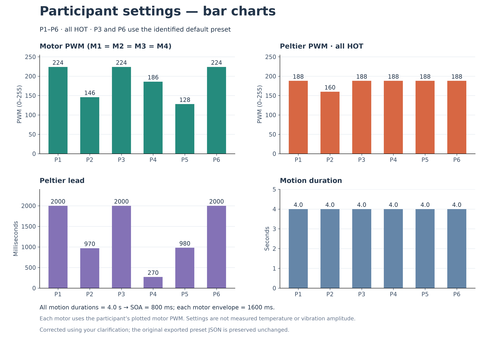
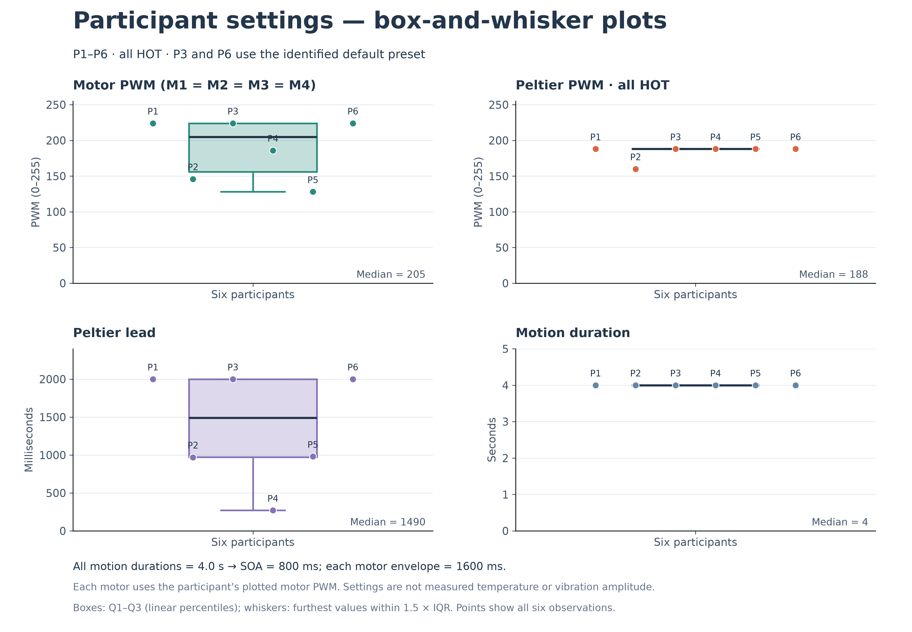

All six participants were tested HOT, per user clarification. Saved C flags were preset-saving artifacts. P6 uses the same identified default as P3: all motors 224, Peltier 188 HOT, lead 2000 ms, motion 4000 ms. Original export is retained unchanged.


| ID | Motor PWM | Peltier PWM | Lead (ms) | Original observation |
|---|---|---|---|---|
| P1 | 224 | 188 | 2000 | Reported thermal motion; somewhat discrete. |
| P2 | 146 | 160 | 970 | Preferred lower heat. Lower vibration intensity felt continuous; reported upward heat movement. |
| P3 | 224 | 188 | 2000 | Comfortable with high heat; no illusion, heat felt static. User explicitly identified the default preset. |
| P4 | 186 | 188 | 270 | Continuous motion; comfortable temperature; no clear thermal illusion, mixed response. Female noted. |
| P5 | 128 | 188 | 980 | Partially worked; comfortable with high heat. Female noted. |
| P6 | 224 | 188 | 2000 | Partial moving sensation, described as independent of vibration intensity. Strong at forearm, movement toward elbow. Heat felt at back rather than front even with 2 s lead; nevertheless reported heat movement. Slight movement with cold. |
P6's earlier “slight movement with cold” note is retained as an additional observation; the plotted preset represents the clarified HOT condition.
All motion durations are 4 s and all four motor settings match within each participant. Boxplots describe six selected settings, not repeated measurements or treatment effects. Five Peltier values are 188 and one is 160, so Q1=median=Q3=188: the box collapses to a line and 160 lies outside the 1.5-IQR whiskers. This is a mathematical consequence of repeated values, not evidence of a faulty observation. Duration is constant, so its box and whiskers also collapse.
Reported continuity of vibration and perceived moving heat are separate outcomes. These informal observations do not establish a best parameter setting, a success rate, or a male/female difference. Too much lead was reported to separate thermal and vibration sensations for some participants. PWM is not temperature.